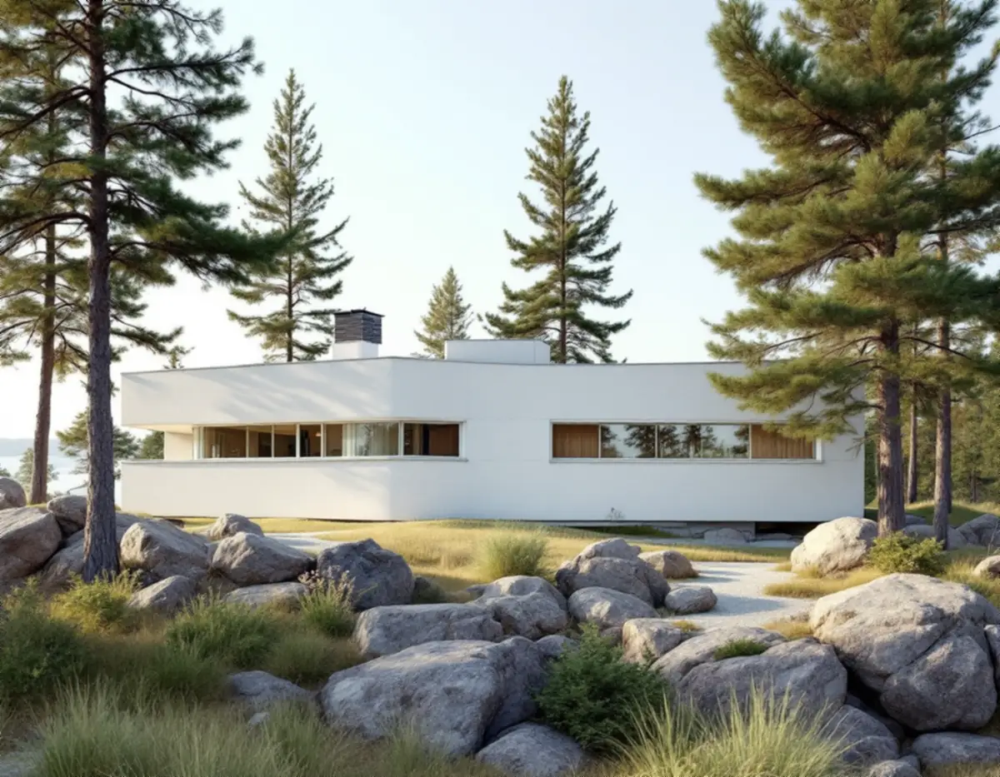
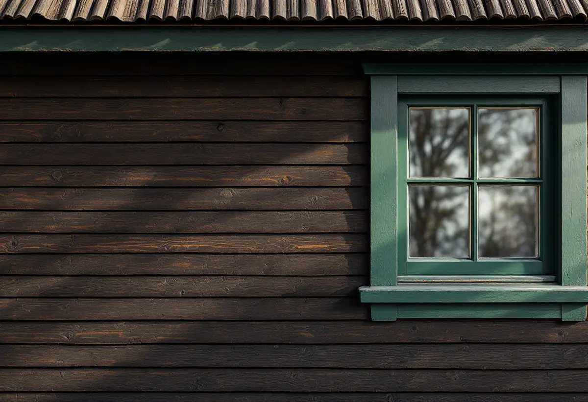

Platsbesök
Vi tittar på om fasaden är puts eller trä och vilken färg som sitter där i dag.
I Djursholm och Stocksund ligger ljust putsade villor och mörkmålade trävillor ibland i samma kvarter. De två fasaderna målas med helt olika färger och metoder. Geal Entreprenad AB målar fasader i Danderyd och utgår från vad varje hus är byggt av och målat med.

Danderyds översiktsplan beskriver två riksintressen för kulturmiljövården: Djursholms villastad, landets första som förort anlagda villastad med bebyggelse främst från 1890–1930, och Stocksunds villastad. I Djursholm kan stilidealen följas från de första enkla trävillorna till nationalromantik, jugend och funktionalism. Kommunen har preciserat riksintresset i värdekärnor, och de visar hur olika fasaderna är.
Vid Urdavägen, kommunens enda bevarade större område med tidig funktionalism från 1930-talet, är villorna oftast putsade i ljusa kulörer. Vendevägens villor från 1910-talet har puts i ljusa kulörer, och kring Fafnervägen och Hildingavägen dominerar puts på 1920-talsklassicistiska hus. På Hildingavägen och Stenbocksvägen står i stället nationalromantiska villor från omkring 1910 i trä, oftast målade i mörka kulörer. I Gamla Djursholm finns träpanel i mörka kulörer bredvid rå betong, tegel och puts.

Länsstyrelsernas blad om puts skriver att det fram till mitten av 1900-talet nästan bara användes rent kalkbruk, och att kalkputs avfärgas med traditionell kalkfärg. Är huset målat med kalkfärg ska man fortsätta med det. Traditionell kalkfärg kräver fyra till sex strykningar för full täckning, men den stryks snabbt och blir transparent med en vacker lyster. Riksantikvarieämbetet beskriver kalkfärg som en öppen färg som släpper igenom fukt och anger upp till sju strykningar utomhus, följt av fixering med kalkvatten.
Kulören kan brytas efter ett färgprov, och bladet nämner att man kan skicka in en bit puts med gammal färg till fabriken. Kalkfärger med tillsats av plast bör undvikas. Enligt handboken har kalkfärg dålig vidhäftning på förgipsade och cementrika underlag, och äldre lagningar med cementhaltigt bruk tas bort och putsas om med kalkputs. Bladet säger samma sak kort: puts av kalkbruk ska lagas med kalkbruk, annars får den gamla putsen och lagningen olika egenskaper.
På de mörkmålade trävillorna kan det sitta linoljefärg, och då fortsätter man med den. Enligt Länsstyrelsernas blad om målning på trä är linoljefärg en täckande färg med blank yta som kritar och mattas med tiden. Den torkar genom oxidation och måste därför strykas mycket tunt så att luftens syre kommer åt. Riksantikvarieämbetet skriver att få färgtyper kan målas i så många skikt utan att den gamla färgen måste tas bort, och att linoljefärg har överlägsen vidhäftning.
Bladet beskriver också hur färgskalan på trähus blev dovare under 1800-talets andra hälft, med bruna, gulgrå och gröna kulörer och fönster ofta i rött, brunt eller grönt. Fram till 1950-talet gjordes utomhusfärg nästan bara med jordpigment, och grått och svart fick man från kimrök. En del traditionella pigment är giftiga. Blyvitt och kadmium är förbjudna, och i stället för blyvitt används i dag zinkvitt. När gamla lager slipas sker det sparsamt och med skyddsmask.
Danderyds kommun skriver att ommålning av ett en- eller tvåbostadshus inte kräver bygglov sedan den 1 december 2025, men att lov krävs om fastigheten ligger inom ett kulturhistoriskt särskilt värdefullt område eller om byggnaden är särskilt värdefull. Inom riksintressen för kulturmiljövården gäller lovplikt. Om din fastighet berörs ser du i kommunens kulturmiljökarta, och för lovfria åtgärder går det att söka frivilligt bygglov för att få beslut på att åtgärden uppfyller lagens krav.
Kommunen påminner också om att ändringar ska göras varsamt och anpassas till byggnadens värden, även när lov inte krävs. Om kommunens riktlinjer för tidstypisk färgsättning kan du läsa under målare i Danderyd, om panel och grund under fasadrenovering i Danderyd och om färgtyper i stort under målare.
Vi tittar på om fasaden är puts eller trä och vilken färg som sitter där i dag.
Vi kontrollerar om fastigheten ligger i ett värdefullt område innan kulören bestäms.
Lagning, färgtyp, antal strykningar och ROT-avdrag redovisas var för sig.
Puts borstas och lagas med kalkbruk, trä tvättas och skrapas.
Kalkfärg i flera tunna lager på puts, linoljefärg tunt på trä.
Vi går igenom fasaderna med dig och bättrar där det behövs.
Skatteverket ger rotavdrag för att måla och rengöra fasader på småhus, och även för att montera och ta ner byggnadsställningar i samband med arbetet. Fasaden på ett hus i en bostadsrättsförening ger inget avdrag.
Avdraget är 30 procent av arbetskostnaden, högst 50 000 kr per person och år och högst 75 000 kr tillsammans med rutavdrag. Färg, material och resor ger inget avdrag. Vi drar avdraget direkt på fakturan.
Fasadens yta och höjd, om putsen behöver lagas, hur många strykningar färgtypen kräver och hur mycket snickerier och detaljer som ska målas styr mest. Efter ett gratis platsbesök får du ett skriftligt kostnadsförslag.
Fasad, fönster och invändig målning.
Målare i Stockholm →Takbyte, takbesiktning och plåtarbeten.
Takläggare i Danderyd →Djursholm, Stocksund och Enebyberg.
Takrenovering i Danderyd →Tillbyggnad, tomt och kommunens riktlinjer.
Byggföretag i Danderyd →Villastäder, ritningar och ventilation.
Badrumsrenovering i Danderyd →Villastäder, egnahem och grupphus i Danderyd.
Fasadrenovering i Danderyd →Lovplikt, klassning och spröjs i Danderyd.
Fönsterbyte i Danderyd →Originalgolv i villor från 1890-talet och framåt.
Golvläggare i Danderyd →Villastäder, egnahem och kommunens regler.
Köksrenovering i Danderyd →Villor, egnahem och grupphus i Danderyd.
Målare i Danderyd →Rännor, stuprör och beslag i Danderyd.
Plåtslagare i Danderyd →Altaner, staket och carport.
Snickare i Danderyd →Villastaden, takmaterial och solceller.
Takbyte i Danderyd →Funkis, grupphus och 1950-talsvillor.
Tillbyggnad i Danderyd →